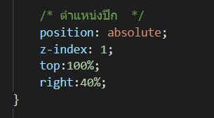

Reference
@KEYFRAME
คือ ช่องสำหรับกำหนดค่าสร้างภาพความเคลื่อนไหว(Animation) ให้กับตัวรูปภาพหรืออะไรก็ตามโดยจำเป็นต้องมีคีย์เริ่มต้น และสิ้นสุด
Animation
สำหรับทำส่วน ภาพเคลื่อนไหว(Animation) ต่างๆ
animation-duration คือ เวลาของ Animation
animation-name คือ ชื่อที่ใช้เชื่อมกับ Keyframe
animation-iteration-count:infinite คือ วนซ้ำแบบ infinite
cursor:pointer คือ Cursor เมื่อวางเมาส์ชี้ไปที่ ... ตัว cursor จะเปลี่ยนเป็น pointer
การทำ คำพูดล่องหนและปีกข้อความ
รูปที่ 1 visibility:hidden เพื่อซ่อนข้อความและกำหนดค่าอื่นๆ
รูปที่ 2 กำหนดตำแหน่งปีกลูกศรของกล่องข้อความ
รูปที่ 3 เมื่อนำเมาส์วางทับในส่วนตัว Crewmate ในหน้า Index
ในส่วนหน้า Future Carrier
content คือ คำที่ต้องการที่จะแสดงและกำหนด
justify-content:center และ align-item:center เพื่อกำหนดให้ตัวอักษรและรูปภาพอยู่ตรงกลาง
border-radius เพื่อกำหนดขอบ 100% = วงกลม
transition การเปลี่ยนแปลงในเวลาที่กำหนด
ในส่วนชื่ออาชีพ
white space:pre คือการกำหนดให้ เมื่อ spacebar จะเป็นการเว้นช่องว่างในช่องที่กำหนด
เมื่อนำเมาส์ไปในช่อง icon จะเป็นการเปิดรูปภาพออกมา
All Skills By https://www.w3schools.com and https://www.savtec.org/articles/coding/how-to-css-only-overlays-effect-with-box-shadow.html